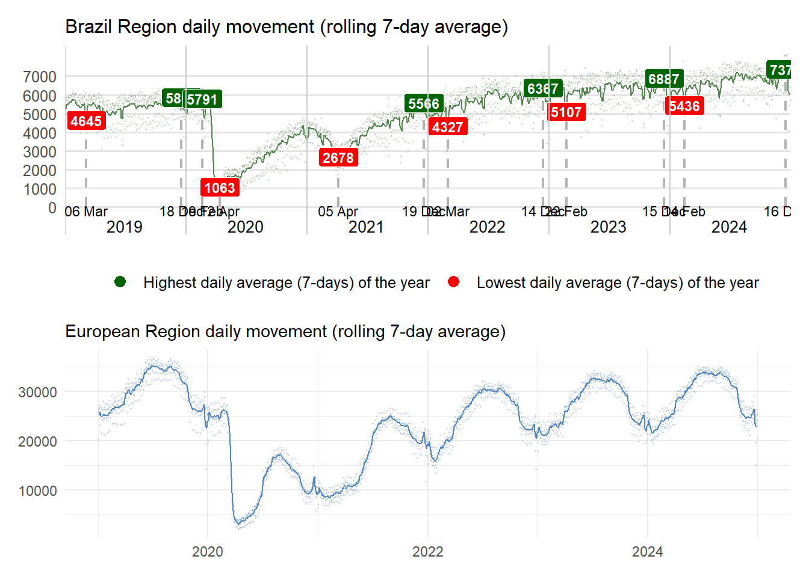
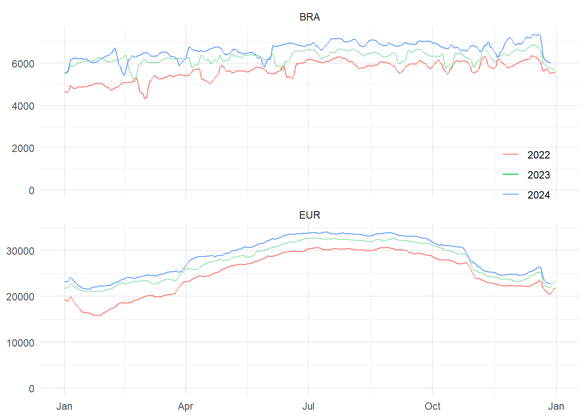
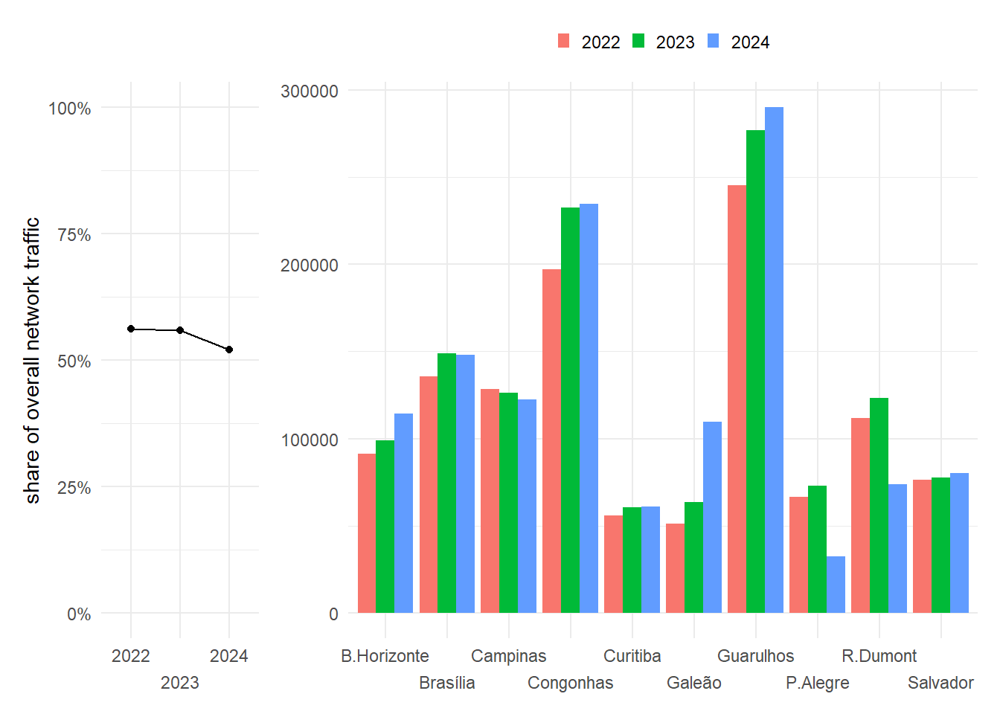
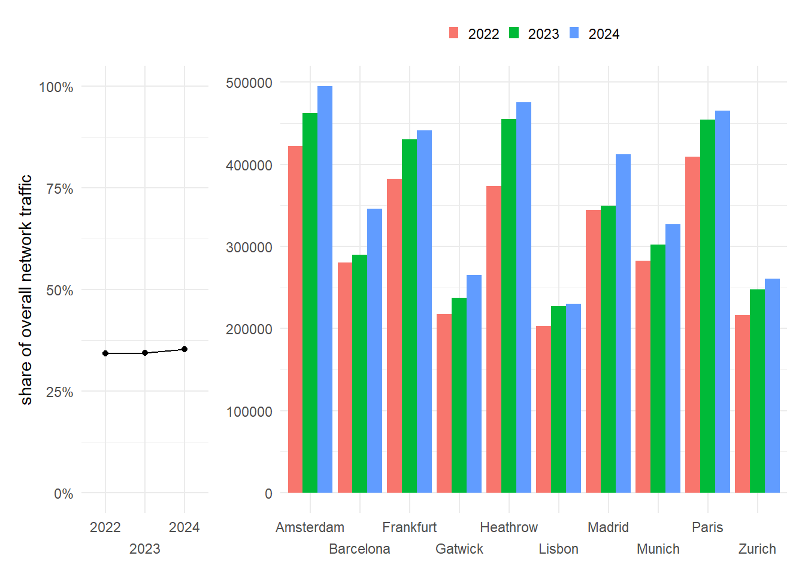
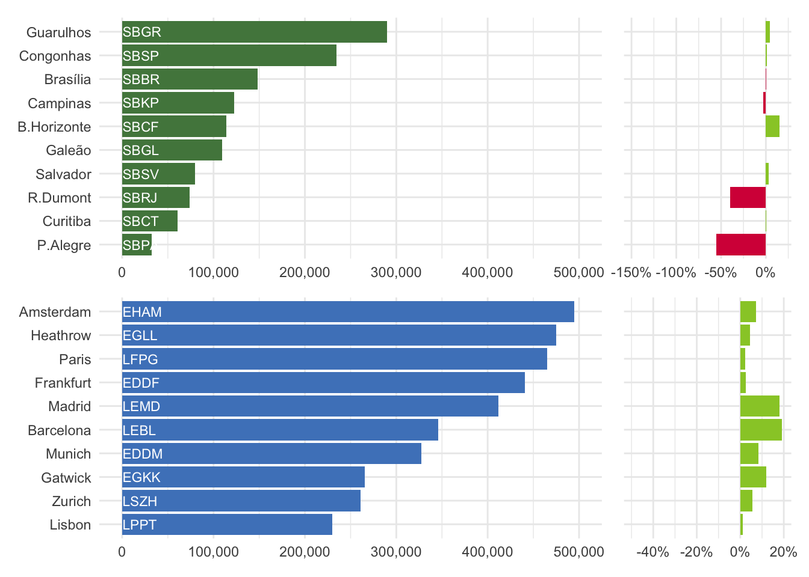
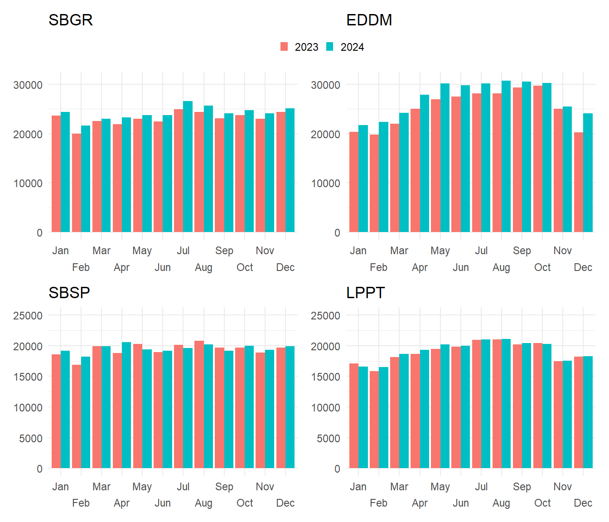
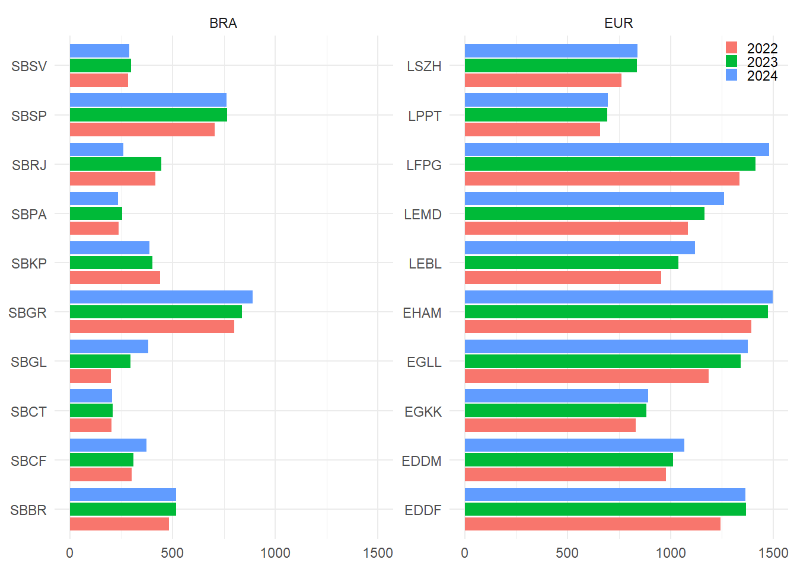
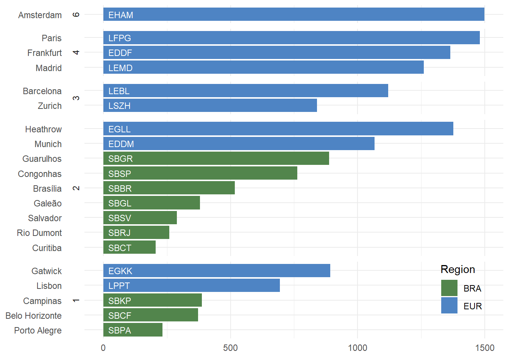
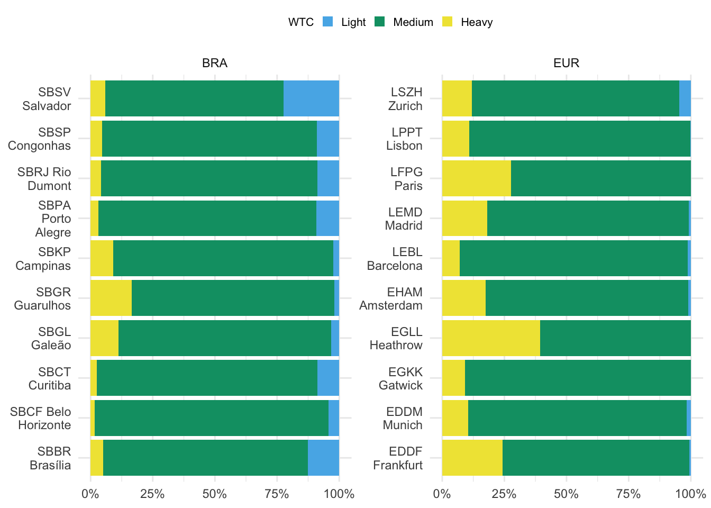

3 Traffic Characterisation
To facilitate operational benchmarking comparisons, it is crucial to have a good understanding of the level and composition of air traffic. The preceding section provided an overview of the context and organisation of air navigation services in Brazil and Europe, and the overall network characteristics. This chapter presents some air traffic characteristics for both regions to provide a framework for the observed operational performance in subsequent parts of the report.
3.1 Network Level Air Traffic
Figure 3.1 shows the regional traffic development in Brazil and Europe for the period 2019 to 2024.
For Brazil, it is important to remember that Figure 3.1 shows the aggregated movements per airport at the whole network level. The shown total does not necessarily reflect the total number of flights. Another important observation related to the data is that Brazil’s number of airports served with the TATIC tool (Tower ATC System) has increased. Despite raising the processed total daily flight number, this difference is mostly transparent for this study as these additional airports handle only a small number of movements on a day-to-day basis.
Brazilian air traffic continues to exceed 2019 levels, marking a phase of real growth, not just post-pandemic recovery. Since 2022, traffic has grown steadily, showing a structured recovery in demand. However, commercial aviation is still adjusting its route network in some regions to fully match 2019 levels.
Figure 3.1 shows the daily evolution of air traffic in Brazil (7-day moving average) highlights the busiest and quietest periods of recent years. Over the past three years, the day with the lowest average traffic in Brazil typically falls on the Wednesday after Carnival. Meanwhile, the annual peak usually happens in late December, close to Christmas, reinforcing a well-established seasonal pattern in the Brazilian air transport market. Overall, despite short-term fluctuations, the general trend is upward, confirming that Brazil is on a steady growth path. It is important to note that the Brazilian data only includes commercial flights (excluding general and military aviation) and is based on UTC time.
When we compare this with the European Region, a different dynamic becomes visible. In terms of total network-level air traffic, Europe still lags behind its pre-pandemic levels. However, if current trends continue, the region is expected to reach or slightly surpass 2019 traffic levels by 2025. Low-cost carriers have outperformed mainline airlines in the recovery phase. Their business model allowed for faster adjustments in staffing, crewing, and servicing. At the same time, national support programs for legacy carriers often included conditions such as slot restrictions or reduced domestic operations, which contributed to a decrease in overall network connectivity and frequency between airports.

Figure 3.2 compares the evolution of daily air traffic in the Brazil and European regions across the last three years. Each line represents a 7-day moving average of flight numbers, allowing seasonal patterns and year-over-year changes to be visualised more clearly.
In the Brazilian region, the data shows a consistent upward trend, with each year positioned above the previous one, especially in the first and second quarters. This indicates that Brazil’s aviation sector not only recovered from the pandemic but has entered a period of sustained organic growth. The seasonal curve in Brazil is more stable throughout the year, reflecting a demand pattern that is less affected by strong seasonal variations.
In contrast, the European region displays strong seasonality, with pronounced peaks during the summer months (June to September) and sharp drops in winter. This pattern aligns with Europe’s tourism-driven traffic, where demand is concentrated in holiday periods. While there is a general growth trend during the post-pandemic phase, a clear step change took place between 2022 and 2023. Comparing 2023 to 2024 reveals a shallow, but continual, growth across the year signalling a certain level of saturation in terms of network connections.
The analysis of annual trends also reveals how regional disruptions can impact national networks. In Brazil, traffic volume dropped significantly in May 2024, due to heavy rainfall in the south starting in late April. The floods led to the prolonged closure of Salgado Filho International Airport (SBPA) in Porto Alegre, which remained out of operation until October. This disruption had a clear impact on domestic commercial aviation and reduced overall national traffic during that period.
While Brazil shows less seasonal fluctuation overall, Europe’s variation in traffic volume is much more pronounced. This contrast points to the importance of adjusting capacity and optimizing airport infrastructure to better respond to periods of high demand.
3.2 Airport Level Air Traffic
The previous section showed the air traffic development on the network level. As airports represent nodes in this overall network, changes to the overall traffic situation will ripple down to the airport level. This demand on terminal and airport air navigation services forms a substantial input to understand how the operational performance measures in this report developed over time for the selected study airports. This report looks at the performance levels observed at 10 key airports in each region (c.f. scope)


Figure 3.3 presents the airport-level traffic evolution for the study airports from 2022 to 2024. The data clearly show different dynamics between the two regions. In Europe, all airports observed increases in movement levels from 2023 to 2024, reinforcing the region’s ongoing recovery trajectory.
The Brazilian scenario is more heterogeneous. While some airports, such as Galeão (SBGL) and Guarulhos (SBGR), registered increases, others—such as Santos Dumont (SBRJ) and Porto Alegre (SBPA) saw declines. Meanwhile, Congonhas (SBSP) and Brasília (SBBR) showed very little variation. This divergence highlights the uneven pace of recovery among Brazil’s major airports, reflecting broader structural and operational differences in the national aviation landscape.
It is also important to emphasize that Brazil’s air traffic is distributed across a much larger number of airports compared to Europe. As discussed in Chapter 2, Brazil’s extensive network dilutes traffic concentration at the top airports. This is illustrated on the left side of Figure 3.3, which shows a slight decline in the share of total traffic handled by Brazil. This suggests a modest redistribution of movements across a broader set of airports, potentially due to regional market recovery, strategic airline adjustments, or temporary infrastructure constraints—factors that will be discussed in the next sections.
Europe’s busiest airports have slightly increased their share of total network traffic over the same period. This upward trend reflects the growing reliance on major hubs as the region continues progressing toward pre-pandemic traffic levels, supported by more robust infrastructure and concentrated demand.

The 2024 air traffic analysis highlights the importance of understanding the structural differences between the Brazilian and European networks. While Guarulhos (SBGR) remains the busiest airport in Brazil, its traffic volume is comparable to that of the fifth and sixth busiest airports in Europe— Munich and Gatwick. This shows that direct comparisons between the top airports in each region may not fully reflect their operational realities. Factors such as the number of runways, network architecture, and traffic density create unique operational complexities in each case.
In Brazil, the largest traffic drop in 2024 occurred at Porto Alegre Airport (SBPA), which was directly impacted by major flooding in May and remained closed until October. Many flights were redirected to nearby airports in southern Brazil, which are not included in the scope of this comparison with Europe. Another change was the increase in traffic at Galeão International Airport (SBGL), which rose to sixth place among Brazil’s busiest airports. This shift was mainly driven by restrictions applied at Santos Dumont Airport (SBRJ), leading to a reallocation of flights from SBRJ to SBGL. As a result, SBRJ saw a decline, while SBGL experienced gradual growth in operations. This redistribution not only affects annual totals but will also have direct impacts on other indicators, such as the peak day of operations, which will be discussed later in this report.
The data illustrates how both the Brazilian and European air networks have adapted to their respective challenges. In Brazil, the system has shown resilience in the face of environmental events and regulatory changes, while in Europe, traffic growth is becoming more concentrated at major hubs as the region continues to recover toward pre-pandemic levels. These dynamics highlight the importance of continuous monitoring and flexible planning to ensure operational efficiency and network stability in both regions.

Figure 3.5 shows the monthly evolution of traffic at Guarulhos International Airport (SBGR) during 2023 and 2024, which remains the top airport in Brazil, and Munich (EDDM). EDDM recorded approximately 50,000 more operations than SBGR in 2025. For SBGR, a steady increase in monthly operations can be seen throughout 2024 compared to 2023, with July standing out as the month with the highest volume during the period analysed. This trend reflects the continued strengthening of commercial aviation at Brazil’s main hub. Operations at EDDM show a more pronounced seasonal pattern with traffic building up from end Spring to the peak levels during the summer months including October. Comparing traffic levels in 2023 with 2024, EDDM shows also a strong increase in demand as part of the on-going pandemic recovery.
Comparing operations at Sao Paulo Congonhas (SBSP) and Lisbon (LPPT) shows again a more seasonal pattern in Europe with the summer period representing the peak months. Traffic evolution at SBSP is more moderated. There exists variation across the year in comparison to 2023 suggesting slight modifications of the schedule. However, on average, traffic levels appear stable at SBSP servicing predominantly national and regional traffic. Lisbon (LPPT) showed also smaller variations when comparing traffic levels in 2023 vs 2024. This suggests that air transport demand has stabilised post-pandemic. It also evidences that the level of air transport recovery across Europe varies.
Guarulhos’ performance becomes more relevant when compared to the busiest airports in Europe. Similar traffic levels were observed at Munich (EDDM) in Europe in 2024 highlighting the different realities of each region. This comparison helps illustrate the structural complexity and differences between the two systems. While Brazil concentrates much of its traffic in a number of key airports like SBGR, Europe sees a more varied spread of operations across a larger network of major airports. The group of latter airports often operate a more robust infrastructure (such as more runways). Therefore, a direct comparisons between the “top” airports in each region may not accurately reflect their unique operational contexts.
3.3 Peak Day Traffic
While the annual traffic provides insights in the total air traffic volume and the associated demand, it does not provide insights on the upper bound of achievable daily movement numbers. The latter depends on demand, operational procedures and/or associated constraints, and the use of the runway system infrastructure. The peak day traffic is determined as the 99th percentile of the total number of daily movements (arrivals and departures). The measure represents thus an upper bound for comparison purposes.

Figure 3.6 shows the evolution of peak day traffic between 2022 and 2024 across the Brazilian and European airports included in this study. The peak day measurement is as a useful complement to traffic levels and average daily movement metrics. It provides a reference to the achievable daily service rate that can highlight nuances of the operational context and constraints at comparable airports and approach areas.
Overall, the data shows a general stability in operational volumes across most major airports in Brazil. On the European side, the year-by-year comparison highlights the on-going recovery and initial consolidation effects post the pandemic. Consistent with the overall traffic increase the majority of them recorded an increase in peak day traffic, with all of them showing significantly higher values compared to 2022.
Still, some variations stand out on the Brazilian side:
Guarulhos (SBGR), Galeão (SBGL), and Confins (SBCF) recorded increases in their peak day movements, reflecting their greater capacity to absorb traffic and some redistribution of demand within the national network.
Santos Dumont (SBRJ), on the other hand, shows a notable drop, directly tied to the operational restrictions implemented during 2024, which limited its capacity and led to the transfer of some flights to SBGL.
In the case of Porto Alegre (SBPA), even though it was severely affected by floods starting in May 2024, the data does not show a significant drop in its peak day value. This is likely because the peak occurred either before May or after limited operations resumed in October.
Regarding the peak day traffic at European airports:
Paris Charles de Gaulle (LFPG) stood out with the most pronounced growth in both 2023 and 2024.
Significant step increases were observed at London Heathrow (EGLL), Frankfurt (EDDF), and Madrid (LEMD) between 2022 and 2023. As major hubs, this also reflects the increase in international air traffic and the reactivation of network connections by the major carriers operating from/to these airports.
Marginal to no changes between 2023 and 2024 evidence that the peak operations at Frankfurt (EDDF), Gatwick (EGKK), Lisbon (LPPT), and Zurich (LSZH) reach their daily maximum service rate.
The comparison between the Brazilian and European contexts reinforces the importance of considering each network’s structure, operational model, and geographic distribution when evaluating operational performance at and around airports. It also shows how peak day traffic can offer unique insights — especially during periods of recovery or transition — by highlighting the maximum operational load airport services can sustain regardless of their average daily traffic.

Analysing the 2024 peak day data, as presented in Figure 3.7, with Brazilian and European airports grouped by number of runways, we observe that six European airports operate with three or more runways and are therefore not directly comparable to Brazilian airports. However, it is important to note that in many of these cases, the runway system does not support fully independent operations on all available runways. Such constraints reduce the available runway system capacity, and thus, the serviced peak traffic is also impacted by the runway system configuration. For example, operations at Amsterdam (EHAM) cannot make use of all six runways at the same time. Operations at Zurich (LSZH, 3 interdependent runway system) range in the order of single runway operations at Gatwick (EGKK, 1 runway). As a result, peak traffic performance is also shaped by the specific runway configuration.
When focusing on airports with up to two runways, European airports still show significantly higher peak day movements compared to the Brazilian ones. This difference can be attributed to more robust infrastructure and operational systems in Europe. Additional benefits are exploited by dedicated operational concepts. For example, London Heathrow implemented time-based separation on final which adds to achieving a high level of runway system throughput even in high wind situations.
This shows the importance of analysing peak day traffic as a complementary indicator to average daily movements, especially during periods of recovery or operational adjustments. Future research may highlight the impact of the runway system configuration on the service rate under the associated runway use.
3.4 Fleet Mix

Figure 3.8 confirms the dominance of the “medium” aircraft category at the airports analysed in both Brazil and Europe. Fleet mix plays a key role in airport capacity, directly impacting traffic flow and operational efficiency. Generally, a higher share of “heavy” aircraft can reduce runway throughput due to wake turbulence separation requirements and longer landing and take-off times.
In Brazil, the main international hubs, Guarulhos (SBGR), Galeão (SBGL), and Campinas (SBKP), showed a 15% to 20% share of “heavy” aircraft, reinforcing their role as the country’s key international gateways. Campinas, in particular, stands out as the main hub for Azul Linhas Aéreas and also handles a large volume of cargo operations, which contributes to its diverse fleet profile and operational complexity.
Some Brazilian airports such as Brasília (SBBR) and Salvador (SBSV) serviced a significant share of “light” aircraft. This category that is nearly absent among the European airports analysed. The notable exemption is Zurich (LSZH). In Salvador, light aircraft account for nearly 20% of all movements, and a similar pattern is observed in Campinas, reflecting their regional and logistical roles.
On average, the share of “heavy” aircraft is higher at the European study airports. The major European hubs like Frankfurt (EDDF), Heathrow (EGLL), and Charles de Gaulle (LFPG) operate with a higher proportion of “heavy” aircraft, in line with their function as global connection points. These structural differences reflect how each region organizes its connectivity: Brazil tends to centralize long-haul operations in a few key airports. The European network evidences the national focus on air transport development. With a significant higher number across a broader set of hubs traditionally servicing the national capitals.
Based on continuous monitoring throughout the year, this pattern has proven to be remarkably stable. The distribution of aircraft categories has remained consistent even during periods of disruption, such as extreme weather or localized infrastructure constraints. These observations suggest that the fleet mix at the analysed airports is shaped more by long-term structural factors than by short-term fluctuations, as airspace users operate and renew their fleet servicing these airports within their economic and operational context.
3.5 Summary
This chapter provided a comprehensive overview of air traffic dynamics across Brazil and Europe, covering both network-wide and airport-level perspectives.
The data confirms that Brazilian air traffic has surpassed pre-pandemic levels, reflecting a phase of real growth, while Europe continues a gradual recovery, marked by strong seasonal peaks and a more fragmented network structure. If current trends persist, Europe is expected to return to pre-pandemic traffic levels by 2025/2026, particularly driven by robust summer activity and the continued normalisation of regional and international demand. Despite these differences, both regions show signs of stability and resilience, even when affected by disruptions such as extreme weather or regulatory adjustments. Events like the prolonged closure of Porto Alegre (SBPA) and restrictions at Santos Dumont (SBRJ) highlighted the sensitivity of localized operations and the capacity of the network to adapt.
At the airport level, Brazilian traffic remains highly concentrated in a few major hubs, whereas European operations are more spread across several national gateways. There is a more pronounced seasonal pattern in Europe typically culminating during the summer holiday season.
The peak day analysis complemented the annual view by illustrating the operational limits reached under maximum demand. Although volumes remained stable overall, individual airports showed notable variations—either from growth, as in SBGL and SBCF, or contraction, as seen in SBRJ. European peak service rates show the overall recovery pattern and first signs of reaching the available capacity for the major hubs.
Finally, the fleet mix analysis reinforced the structural differences in how each region operates: Brazil shows a higher presence of light aircraft in some regional airports and a centralised model for long-haul traffic. Light-type traffic at the study airports in Europe remain the exemption. A higher share of heavy aircraft is observed at the top-European airport in this study. The wider spread of international connections across all chosen airports shows a less centralised global connectivity model.
Together, these findings establish a base to understanding the operational performance indicators in the next chapters.